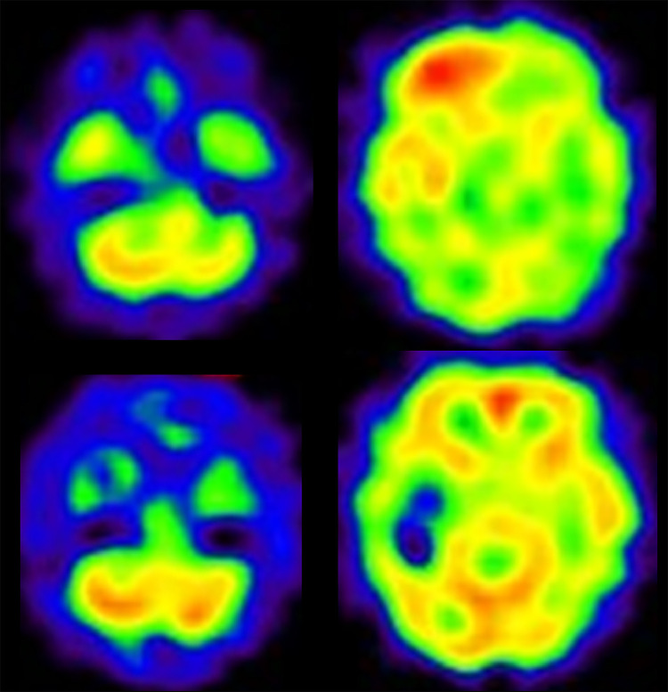
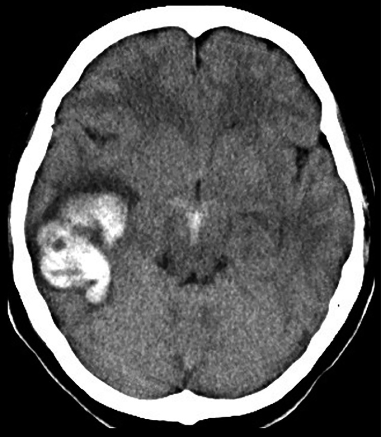
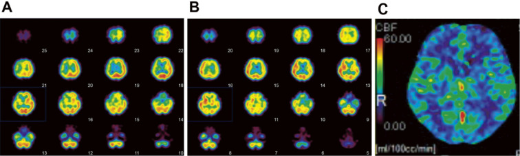

3060 — Hội chứng tăng tưới máu não sau tái thông mạch cảnh / Cerebral hyperperfusion syndrome (CHS) after carotid revascularization
Tags: pattern:dau-dau-sau-mo pattern:co-giat pattern:xuat-huyet-nao-thuy pattern:tang-tuoi-mau pattern:phu-nao vung:nao vung:mach-mau-nao protocol:CT-khong-can-quang protocol:CTP protocol:ASL protocol:SPECT protocol:DSA score:NIHSS
Mức chắc chắn (certainty): tổng hợp y văn (literature synthesis) — 2 ca nguyên văn có ảnh và số liệu (1 ca CAS cấp cứu cho bóc tách động mạch cảnh, 1 ca CEA có trạng thái động kinh không co giật) + số liệu dịch tễ/tử vong trích trong chính 2 bài đó. Không có RCT; ngưỡng tưới máu chưa được 2 nguồn này nêu bằng số nên bài ghi rõ "chưa rõ — cần tra" thay vì bịa.
Vì sao bài này quan trọng: đây là mặt ngược lại của bài 3059 — cùng bệnh nhân hẹp cảnh nặng, cùng ngày hậu phẫu, nhưng thiếu máu thì phải nâng huyết áp, còn tăng tưới máu thì phải hạ huyết áp khẩn. Chọn sai hướng điều trị trong 30 phút đầu là đủ để bệnh nhân xuất huyết não thùy — biến cố ~1% nhưng tử vong 26%. CT lúc đau đầu thường bình thường, nên bác sĩ CĐHA là người đầu tiên phải nghĩ tới chẩn đoán này khi đọc phim "sạch" ở bệnh nhân vừa tái thông cảnh.
1. Tổng quan bệnh học – cơ chế hình ảnh
- Vì sao xảy ra — mất tự điều hòa (autoregulation failure): khi cảnh hẹp nặng mạn tính, tiểu động mạch não phía sau chỗ hẹp giãn tối đa để giữ lưu lượng (hạ áp suất tưới máu); đường cong tự điều hòa bị đẩy sang trái. Khi hẹp được giải quyết (CEA/CAS/bypass), áp lực tưới máu tăng vọt trong khi giường mạch không còn khả năng co lại → CBF tăng quá mức trong 0–14 ngày (đa số 0–7 ngày, đỉnh hay gặp ngày 1–3).
- Vì sao tăng áp lực gây PHÙ rồi XUẤT HUYẾT: áp lực mao mạch tăng → phá hàng rào máu–não → phù mạch (vasogenic edema); nếu áp lực vượt sức chịu thành mạch nhỏ (đặc biệt ở chất trắng sâu và vùng chuyển tiếp) → vỡ mạch, thường xuất huyết thùy (lobar) chứ không phải hạch nền — vì tổn thương là giường mao mạch vỏ–dưới vỏ của bán cầu vừa tái thông.
- Vì sao CT ban đầu có thể BÌNH THƯỜNG: giai đoạn đầu là rối loạn chức năng tưới máu, chưa có phù đủ để đổi đậm độ. Trong ca CAS (PMC10475400), CT ngay sau can thiệp không thấy xuất huyết hay ổ nhồi máu, nhưng SPECT tưới máu đã tăng ở bán cầu phải; ngày hôm sau CT mới có máu ở thùy thái dương phải. Đây là lý do "CT âm" không loại trừ CHS.
- Vì sao SPECT/CTP/ASL thấy được: CHS là bệnh của LƯU LƯỢNG, nên hình ảnh chức năng là chìa khóa:
- SPECT tưới máu (¹²³I-IMP): vùng tăng tín hiệu lan tỏa ở bán cầu vừa tái thông; có thể kèm giảm tưới máu tiểu não đối bên ("crossed cerebellar diaschisis" — thấy rõ trong ca CAS).
- CT perfusion (CTP): tăng CBF và giảm MTT ở bán cầu đó; dùng được khi bệnh nhân đã nằm máy CT.
- ASL (arterial spin labeling, MRI): tín hiệu cao bất thường ở vỏ/dưới vỏ bán cầu vừa tái thông, không cần thuốc cản quang — hữu ích khi phải theo dõi lặp lại.
- Số liệu định lượng cốt lõi (từ 2 nguồn của bài):
- Tần suất CHS < 3% sau CEA; xuất huyết não nặng ~1% ở bệnh nhân hẹp cảnh được CEA/CAS, tử vong 26%.
- Co giật sau CEA: 0,5%; trạng thái động kinh không co giật (NCSE) tử vong tới 52%, và 90% NCSE phát hiện được trong 24–48 giờ đầu nếu theo dõi EEG liên tục.
- Ngưỡng huyết áp trong 2 ca: ca CEA giữ huyết áp tâm thu ≤ 120 mmHg mà vẫn bị CHS (đau đầu + nôn trưa ngày 1, huyết áp 144/68 mmHg); ca CAS giữ < 110 mmHg và vẫn xuất huyết thùy thái dương ngày 1. Kết luận thực hành: hạ áp là cần nhưng KHÔNG đủ.
- Hẹp cảnh trong ca CEA: 80% theo tiêu chuẩn NASCET.
- Ngưỡng tưới máu định lượng (ví dụ "CBF tăng ≥ 100% so với trước can thiệp") không có trong 2 nguồn này — chưa rõ, cần tra trước khi dùng làm tiêu chuẩn.
2. Mẫu hình + chẩn đoán phân biệt theo vị trí (Gamut)
Mẫu hình chốt: bệnh nhân hẹp cảnh nặng vừa CEA/CAS/bypass, trong 0–14 ngày (thường ngày 1–3) xuất hiện đau đầu dữ dội kiểu mới, nôn, huyết áp tăng, lú lẫn/rối loạn tri giác, co giật hoặc khiếm khuyết thần kinh khu trú; CT không cản quang có thể bình thường; tổn thương khi có trên CT là xuất huyết/phù ở bán cầu VỪA TÁI THÔNG.
- Gamut theo thời điểm sau can thiệp:
- 0–24 giờ: CHS sớm (đau đầu, tăng huyết áp, co giật); huyết khối/tắc lại (khiếm khuyết mới, CT sạch, CTA thấy tắc); chảy máu vết mổ cổ; tăng huyết áp do đau.
- 1–7 ngày: CHS đỉnh điểm — xuất huyết não thùy, phù, co giật/NCSE; chuyển dạng xuất huyết của ổ nhồi máu tái tưới.
- 7–14 ngày: CHS muộn (ít hơn); tái hẹp, nhiễm trùng, huyết khối tĩnh mạch.
- Gamut theo hình ảnh "tăng đậm độ / phù ở bán cầu vừa can thiệp": xuất huyết do CHS; chuyển dạng xuất huyết của nhồi máu; ngấm cản quang tồn lưu (contrast staining) sau CTA/CTP; PRES (nếu tăng huyết áp nặng, phù đối xứng vùng chẩm–đỉnh); nhồi máu tĩnh mạch; di căn/chảy máu u (nếu có u chưa biết).
- Ba câu hỏi lâm sàng (thay mnemonic): (1) Vừa tái thông mạch cảnh trong 14 ngày? (2) Đau đầu mới dữ dội ± co giật ± tri giác thay đổi ở bán cầu vừa can thiệp? (3) Huyết áp đang cao hơn mục tiêu và CT sạch? — "có" cả 3 → điều trị như CHS trước, chứng minh sau.

- Ảnh: SPECT tưới máu sau CAS — tăng tưới máu thùy trán–thái dương phải và giảm tưới máu tiểu não trái (crossed cerebellar diaschisis); hàng dưới là SPECT ngày 7 đã hết chênh lệch. Nguồn Radiol Case Rep 2023 (PMC10475400), CC BY-NC-ND 4.0, nguyên bản.
3. Bảng so sánh phân biệt (ma trận đối chiếu)
| Thực thể (entity) | Hình ảnh điển hình | Chốt vào (rule-in) | Chốt loại (rule-out) | Gợi ý xác nhận |
|---|---|---|---|---|
| CHS có xuất huyết | Xuất huyết THÙY ở bán cầu vừa tái thông, ± phù quanh ổ máu; CT trước đó sạch | Đau đầu mới + huyết áp tăng trong 0–14 ngày sau CEA/CAS + máu trong thùy não thuộc lãnh thổ vừa tái thông | Máu ở hạch nền/thân não ngoài lãnh thổ hoặc ổ nhồi máu có sẵn → nghĩ nguyên nhân khác | CT không cản quang ngay; SPECT/CTP/ASL xác nhận tăng tưới máu; theo dõi CT 24 giờ |
| CHS chưa xuất huyết (giai đoạn chức năng) | CT sạch, có thể phù nhẹ vỏ–dưới vỏ; ASL/SPECT tăng ở bán cầu vừa can thiệp | Đau đầu + nôn + tăng huyết áp + CT sạch đúng thời điểm; tăng CBF trên SPECT/CTP/ASL | CTA thấy tắc mạch hoặc DWI có ổ nhồi máu mới → loại CHS | CTA/CTV loại tắc; DWI loại nhồi máu; SPECT/ASL |
| Chuyển dạng xuất huyết của nhồi máu | Máu trong vùng nhồi máu đã có (thường hạch nền/vỏ), đậm độ lấm chấm rồi tụ | DWI/CT trước đã có ổ nhồi máu cùng vị trí | Không có ổ nhồi máu trước + máu ở thùy khác lãnh thổ nhồi máu → loại | So sánh với DWI/CT trước can thiệp |
| Ngấm cản quang tồn lưu (contrast staining) | Tăng đậm độ vỏ/vùng đã chụp cản quang, không có khối choán chỗ, tự mất sau 24 giờ | Vừa CTA/CTP < 24 giờ, bệnh nhân không xấu đi tương ứng | Đậm độ tăng thêm trên CT lặp lại hoặc có hiệu ứng khối → loại | CT lặp lại 24 giờ hoặc MRI (SWI/T2)* phân biệt máu với cản quang |
| PRES | Phù đối xứng vùng chẩm–đỉnh (và có thể thân não), không theo lãnh thổ mạch | Tăng huyết áp nặng, phù hai bên đối xứng, hồi phục khi hạ áp | Phù MỘT bán cầu đúng lãnh thổ vừa tái thông → loại | MRI T2/FLAIR; đáp ứng hạ áp |
| Tắc lại/ huyết khối cấp mạch vừa can thiệp | CT sạch sớm, DWI có ổ nhồi máu mới, CTA/ DSA thấy tắc | Khiếm khuyết khu trú theo lãnh thổ, tụt huyết áp, CTA tắc | Tưới máu TĂNG trên SPECT/ASL → loại | CTA khẩn; so DWI |
| Co giật do nguyên nhân khác (hạ natri, ngừng thuốc, nhiễm trùng) | CT sạch, không tăng tưới máu | Điện giải bất thường, EEG ổ động kinh ngoài vùng can thiệp | Tăng CBF đúng bán cầu vừa tái thông → loại | Điện giải, EEG/video-EEG, SPECT |
- Ảnh then chốt — CT ngày hôm sau CAS: xuất huyết thùy thái dương phải ở bệnh nhân mà CT ngay sau can thiệp hoàn toàn bình thường; đây là diễn tiến điển hình "sạch → máu trong 24 giờ".

- Ảnh: Radiol Case Rep 2023 (PMC10475400), CC BY-NC-ND 4.0, nguyên bản.
4. Protocol chụp + hệ phân độ/điểm chuẩn hóa
Thứ tự hình ảnh khi nghi CHS (không được đảo):
- CT sọ không cản quang, lát ≤ 1 mm, ngay tại giường/khẩn — mục tiêu loại xuất huyết và loại nhồi máu lớn. Không chờ cản quang, không chờ MRI.
- CTA (hoặc CTV) mạch cảnh–não — loại tắc lại/huyết khối và giả phình ở chỗ can thiệp; làm cùng lần chụp nếu bệnh nhân hợp tác.
- CTP (nếu có) — tìm tăng CBF/giảm MTT ở bán cầu vừa tái thông; hoặc MRI: DWI + ASL + SWI — DWI loại nhồi máu mới, ASL xác nhận tăng tưới máu, SWI phân biệt máu với ngấm cản quang.
- SPECT tưới máu (¹²³I-IMP) — khi CTP/ASL không sẵn có; đây là phương thức được dùng trong cả 2 ca của bài.
- DSA — chỉ khi cần can thiệp (tắc lại, giả phình, lỗ rò), không dùng để "chẩn đoán CHS".
- EEG / video-EEG liên tục 24–48 giờ khi có rối loạn tri giác không giải thích — vì NCSE là biến chứng của CHS (ca CEA: điện cực đồ có phóng lực chu kỳ toàn thể 1,6 Hz, chuyển thành động kinh điện học > 2,5 Hz).
Ngưỡng & xử trí (theo số liệu của 2 ca, không phải guideline):
- Huyết áp: mục tiêu trong 2 ca là huyết áp tâm thu ≤ 120 mmHg (CEA) và < 110 mmHg (CAS); cả hai vẫn bị CHS → cần theo dõi sát hơn là chỉ đặt con số, và hạ áp ngay khi đau đầu + tăng áp.
- Thuốc: nicardipine/labetalol đường tĩnh mạch để hạ áp từng bước, có kiểm soát (tránh tụt sâu gây thiếu máu vùng chuyển tiếp); không dùng thuốc tăng áp/dịch trong nghi CHS.
- Co giật/NCSE: benzodiazepine + thuốc kháng động kinh (ca CEA dùng levetiracetam, cuối cùng 2.000 mg/ngày); an thần propofol + thở máy khi NCSE khó kiểm soát; ngừng an thần khi CBF đã cân bằng (ca CEA ngừng ngày 7).
- Xuất huyết não: ngừng kháng kết tập tiểu cầu/kháng đông theo cân nhắc, kiểm soát huyết áp, CT lặp lại 6–24 giờ, hội chẩn ngoại thần kinh nếu ổ máu lớn/chèn ép.
- Không có thang điểm riêng cho CHS. Dùng NIHSS để theo dõi khiếm khuyết và GCS cho tri giác; phân tầng theo có/không xuất huyết là yếu tố tiên lượng chính (tử vong 26% khi có xuất huyết nặng).
flowchart TD
A[Đau đầu mới ± co giật ± lú lẫn trong 14 ngày sau CEA/CAS] --> B[CT sọ không cản quang NGAY]
B --> C{Có xuất huyết?}
C -->|Có| D[Xuất huyết thùy đúng bán cầu vừa tái thông?]
D -->|Có| E[CHS có xuất huyết: hạ áp có kiểm soát, ngừng kháng đông, CT lặp lại 6-24 giờ]
D -->|Không| F[Tìm nguyên nhân khác: chuyển dạng nhồi máu, PRES, u]
C -->|Không| G[CTA/CTV: loại tắc lại]
G --> H{Tắc mạch?}
H -->|Có| I[Xử trí tắc lại: can thiệp/lấy huyết khối]
H -->|Không| J[CTP hoặc ASL/SPECT: đánh giá tưới máu]
J --> K{Tăng CBF bán cầu vừa tái thông?}
K -->|Có| L[CHS: hạ áp từng bước, theo dõi ICU, EEG nếu tri giác xấu]
K -->|Không| M[DWI loại nhồi máu mới; tìm nguyên nhân khác]
L --> N{Rối loạn tri giác kéo dài?}
N -->|Có| O[Video-EEG 24-48 giờ: tìm NCSE]
N -->|Không| P[Theo dõi NIHSS + huyết áp + CT lặp lại]
5. Biến thể bình thường và cạm bẫy
- "CT sạch" là bẫy số 1: ca CAS có CT ngay sau can thiệp bình thường nhưng SPECT đã tăng tưới máu, và máu xuất hiện ngày hôm sau. Không được nói "không có gì" — phải nêu nguy cơ CHS và đề nghị theo dõi/CT lặp lại.
- Bẫy hướng điều trị NGƯỢC: bệnh nhân tụt tri giác sau tái thông dễ bị nghĩ là tắc lại/giảm tưới máu → truyền dịch, nâng huyết áp → đẩy nhanh xuất huyết. Trước khi nâng áp, phải loại CHS bằng CTA (loại tắc) + đánh giá tưới máu.
- Đau đầu sau mổ cảnh không phải lúc nào cũng là đau đầu thường: đau đầu dữ dội, kiểu mới, kèm nôn và tăng huyết áp trong 14 ngày là cờ đỏ.
- Co giật có thể KHÔNG co giật: ca CEA là trạng thái động kinh không co giật — chỉ có lú lẫn và mắt đảo (roving eye movements); không có EEG thì không thấy. 90% NCSE phát hiện trong 24–48 giờ đầu bằng EEG liên tục.
- Ngấm cản quang ≠ máu: sau CTA/CTP, vỏ não có thể tăng đậm độ do cản quang còn lại; phân biệt bằng CT lặp lại sau 24 giờ hoặc MRI SWI/T2*.
- Crossed cerebellar diaschisis dễ bị đọc là "nhồi máu tiểu não": giảm tưới máu tiểu não đối bên là hệ quả chức năng của tăng tưới máu bán cầu, không phải ổ nhồi máu — đừng mô tả thành "nhồi máu tiểu não mới".
- Hạ áp quá tay cũng nguy hiểm: giường mạch đã mất tự điều hòa; tụt áp sâu gây thiếu máu vùng chuyển tiếp — hạ áp từng bước, có theo dõi thần kinh.
- Đừng quên nguyên nhân khác cùng lúc: huyết khối tĩnh mạch sâu, hạ natri do thuốc, nhiễm trùng — nhất là khi tăng tưới máu đã hết mà tri giác vẫn xấu.
6. Tự lượng giá — Blind Quiz ngay trên trang tĩnh
Ca 1 — nữ 37 tuổi, bóc tách động mạch cảnh trong phải, CAS cấp cứu
- Bối cảnh: đau cổ, mờ mắt phải, tê nửa người trái 3 ngày; DWI không ổ nhồi máu, MRA giảm tín hiệu ICA–MCA phải, CTA thấy hẹp teo (tapering) nặng đoạn cổ ICA → bóc tách. CAS cấp cứu; CT ngay sau can thiệp không có máu, không có ổ nhồi máu; SPECT tưới máu tăng ở bán cầu phải. Huyết áp giữ < 110 mmHg.
- Câu hỏi: (1) Vì sao CT bình thường mà vẫn phải lo? (2) Hình ảnh SPECT gợi ý gì, và "giảm tưới máu tiểu não trái" nghĩa là gì? (3) Ngày hôm sau bệnh nhân đau đầu nhiều — làm gì trước?
Bấm để hiện đáp án (findings + chẩn đoán)
- Diễn tiến: CT ngày 1 sau CAS có xuất huyết thùy thái dương phải (ảnh CT của bài) — đúng bệnh cảnh CHS có xuất huyết.
- Vì sao CT sạch vẫn lo: CHS là rối loạn lưu lượng trước khi có tổn thương cấu trúc; SPECT tăng tưới máu là bằng chứng sớm.
- Crossed cerebellar diaschisis: giảm tưới máu tiểu não đối bên do mất hoạt hóa chức năng từ bán cầu vừa tái thông — không phải ổ nhồi máu.
- Việc làm trước: CT không cản quang khẩn (tìm máu) + hạ huyết áp có kiểm soát; không truyền dịch/nâng áp.
- Nguồn ảnh: Radiol Case Rep 2023 (PMC10475400), CC BY-NC-ND 4.0, nguyên bản.
Ca 2 — nam 73 tuổi, CEA vì hẹp cảnh 80%, ngày 1 đau đầu và nôn

- Bối cảnh: huyết áp hậu phẫu giữ ≤ 120 mmHg; trưa ngày 1: đau đầu toàn thể, nôn, huyết áp 144/68 mmHg; MRI ngày 1 không nhồi máu, không xuất huyết; SPECT thấy tăng CBF lan tỏa bán cầu phải. Được dùng hạ áp + kháng động kinh, an thần propofol, thở máy. Ngày 3 CTP không còn chênh lệch CBF, ngừng an thần ngày 4 — nhưng bệnh nhân vẫn lú lẫn, mắt đảo.
- Câu hỏi: (1) Chẩn đoán? (2) Vì sao không ngừng an thần rồi chờ? (3) Xét nghiệm nào trả lời?
Bấm để hiện đáp án (findings + chẩn đoán)
- Chẩn đoán: CHS sau CEA + trạng thái động kinh không co giật (NCSE).
- Dấu hiệu chốt: video-EEG ngày 4 — phóng lực chu kỳ toàn thể 1,6 Hz chuyển thành động kinh điện học > 2,5 Hz ≥ 10 giây; hình ảnh cấu trúc âm tính (MRI ngày 1, FLAIR ngày 90 không tổn thương mới).
- Vì sao không chờ: tri giác xấu sau khi tưới máu đã cân bằng không giải thích được bằng CHS; NCSE tử vong tới 52% nếu bỏ sót, và 90% phát hiện trong 24–48 giờ bằng EEG liên tục.
- Xử trí: propofol trở lại + tăng liều kháng động kinh (levetiracetam tới 2.000 mg/ngày); ngừng an thần ngày 7 khi tưới máu và EEG cải thiện.
- Nguồn ảnh: NMC Case Rep J 2023 (PMC10351957), CC BY-NC-ND, nguyên bản.
Ca 3 — câu hỏi quyết định (không cần ảnh)
- Bối cảnh: bệnh nhân ngày 2 sau CAS, đau đầu + lú lẫn nhẹ, huyết áp 165/90 mmHg, CT không cản quang sạch. Đồng nghiệp đề nghị truyền 500 mL NaCl 0,9% + nâng huyết áp vì "sợ tụt áp gây thiếu máu não".
- Câu hỏi: Đồng ý hay không? Nêu thứ tự ba việc phải làm.
Bấm để hiện đáp án
- Không đồng ý. Bệnh cảnh này là CHS cho tới khi loại trừ: đau đầu mới + tăng huyết áp + ngày 2 sau tái thông + CT sạch. Nâng áp/truyền dịch có thể đẩy tới xuất huyết não thùy (tử vong 26% khi có xuất huyết nặng).
- Ba việc theo thứ tự: (1) Hạ huyết áp từng bước bằng nicardipine/labetalol TM, theo dõi thần kinh; (2) CTA/CTV loại tắc lại (và DWI nếu làm MRI); (3) đánh giá tưới máu (CTP/ASL/SPECT) — nếu tăng CBF ở bán cầu vừa tái thông thì xác nhận CHS và theo dõi ICU, EEG nếu tri giác không cải thiện.
- Phản biện: nếu CTA thấy tắc lại và DWI có ổ nhồi máu mới, thì hướng điều trị đổi hoàn toàn (bài 3059) — vì vậy không được điều trị mù trước khi có CTA.
Bài liên quan chéo
- 3059 – Thiếu máu não sau bít động mạch cảnh trong — mặt ngược lại: giảm tưới máu, phải nâng áp; đọc cạnh bài này để không điều trị ngược.
- 262 – Bệnh mạch máu lớn do xạ trị não — hẹp cảnh mạn do xạ, nguồn bệnh nhân cho tái thông.
- 249 – Rò động mạch cảnh–xoang hang — biến chứng mạch cảnh khác sau chấn thương/can thiệp, cũng đọc trên CTA/DSA.
- 171 – Bóc tách động mạch chủ — nguyên lý tăng áp lực thành mạch gây vỡ/bóc tách, đối chiếu với giường mạch não.
Ảnh
images/3060_tang-tuoi-mau-nao_SPECT_PMC10475400-Fig4-CCBYNCND.jpg— SPECT tăng tưới máu + diaschisis tiểu não, CC BY-NC-ND 4.0.images/3060_tang-tuoi-mau-nao_CT_PMC10475400-Fig5-CCBYNCND.jpg— CT xuất huyết thùy thái dương ngày 1 sau CAS, CC BY-NC-ND 4.0.images/3060_tang-tuoi-mau-nao_SPECT_PMC10351957-Fig2-CCBYNCND.jpg— SPECT trước/ sau CEA, CC BY-NC-ND.images/3060_tang-tuoi-mau-nao_DSA_PMC10351957-Fig1-CCBYNCND.jpg— DSA hẹp cảnh, CC BY-NC-ND.- Chi tiết nguồn/giấy phép từng ảnh:
images/CREDITS.md.
Không dùng để chẩn đoán độc lập khi chưa có người hướng dẫn.